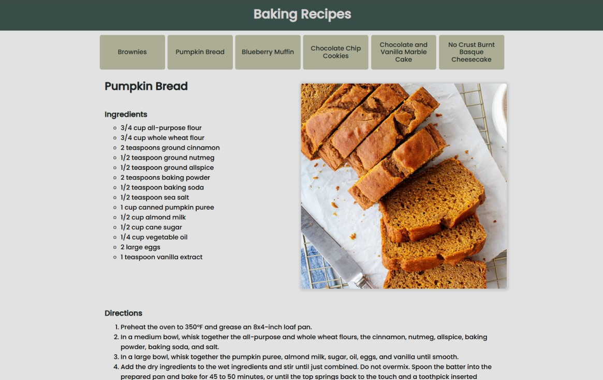

For the final project of my introductory JavaScript class, I was tasked with creating a website that allowed users to navigate through different recipes using a navigation bar at the top. The project required the use of JavaScript as the primary programming language, as it was meant to demonstrate our understanding of the concepts taught in class. I had approximately three weeks to complete the project, and it was a solo effort. I only had a few external resources, with those being the few video tutorials provided by the course.
The first step in this project was understanding what I needed to do. The first items are code related. Based on the assignment details, videos, and examples, I determined that I needed to create my own JSON file containing information that I found online for six different recipes. I figured out that I needed to create a JSON file containing information on 6 different recipes. Each recipe needed to be its own button up at the top on a navigation bar, which needed to append to the page. It also needed to be made by using a forEach loop so that the array of data was all cycled through and appended via one function, not 6 different functions. Then, all the recipe content needed to be appended to the page as well. This only needed one main function, since the page was only supposed to show one recipe at a time. The list of ingredients and directions needed a forEach loop as well, similar to how I needed one for the navigation.
The next items I needed to figure out were related to the content and design of the website. I needed to display the recipe’s name, ingredients, directions, as well as an image. Additionally, I wanted the website to be visually cohesive, so I chose a consistent color palette and font. I also needed to create a favicon to match the rest of the site. Another thing I needed to keep in mind was ensuring that the website was responsive, so that it looked good on mobile, tablet, and desktop.
Once I was able to figure all of these things out, I could start coding and designing the site. Fortunately, this final combined all the skills that I learned throughout the class into one assignment. So, in a way I already knew what I was doing. I just needed to combine all of these things together into a cohesive site. So, the majority of the site was a pretty mainstream process for me. That doesn’t mean I didn’t run into any struggles though.
The biggest learning curve that I experienced on this project was using grid-columns and grid-rows rather than using flexbox for everything. It was something that I was very unfamiliar with, and it took a lot of time to research how to use it effectively. Essentially, grid-column and grid-row divide the page into, you guessed it, columns and rows. There are a few things you can include in with that, such as adding column-gaps and row-gaps. What I needed to figure out in this instance was how many columns and rows I needed on the page and where I wanted each element to be positioned. I also had to consider how long or wide I wanted an element to span, which refers to the number of columns or rows an element can occupy. For example, an object can be positioned in the second row but has a span of two, and so it fits within row two and row three.
During this project, I also had a bit of trouble with my files. By that I mean, I jostled my hard drive where I was storing my project on a bit too hard and all the files for the assignment became jumbled in the incorrect spots and some things were missing, that kind of file trouble. Entirely my own fault, I know. Lesson learned, that’s for sure. How did this affect my project though? Well, fortunately, a lot of my work was still there. What happened was all the data from the files got all mixed around. So, my JavaScript somehow ended up on the CSS file, the CSS somehow ended up in the HTML file, and the html was just missing. I’m not sure where it went. Most of the code was still present from the JavaScript and the CSS files, but not all of it. So, I had to go through it all and see what I was missing and add that back into the files, and also move the code back to its appropriate file of course. I have since bought an SSD to replace this hard drive so that I can avoid this happening in the future.
So, all in all, I made something that I was pretty proud of in the end. Even with all of the troubles I faced, both normal and those entirely of my own creation, I learned a lot along the way. If there was anything I would change, I would definitely be more careful with my things so I’m not doing anything twice. I think I would also have benefited from doing a little bit more research into grid-columns and grid-rows, since I was kind of figuring everything out as I went along, and I think it took me a lot longer that way. Regardless, I’m very happy with what I made!